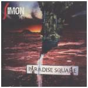

| Artist: | Simon Says |
| Title: | Paradise Square |
| Label: | Galileo Records GR007 |
| Length(s): | 63 minutes |
| Year(s) of release: | 2002 |
| Month of review: | [09/2002] |
| 1) | And By The Water | 4.45 |
| 2) | Paradise Square | 13.42 |
| 3) | Striking Out A Single Note For Love | 11.08 |
| 4) | Fly In A Bottle | 5.48 |
| 5) | Darkfall | 2.35 |
| 6) | White Glove | 15.26 |
| 7) | Aftermath | 10.02 |
The title track seems to hang on to memories once again in the initial minutes, but as the track opens up they fade, moving into the more technical instrumental bridge. The closing returns the focus on melody. Good one.
Striking Out A Single Note For Love has a rather poppy start, disturbingly happy. After several minutes the tempo goes down seriously, and through a vocal bridge we move into an instrumental section that features mellotron with Kashmir guitars. A drastic improvement, unfortunately cut short by another happy intermezzo. This is followed by a semi-dittyish bit with a beat that sounds like a giant walking, musing on the way. The track closes with a key dominated section. Rather inconsistent, and sort of beside me, this one is.
Fly In A Bottle opens a mostly acoustic track, transforming into something more wall of sound like (with heavy mellotronics). Great track.
Darkfall is an intermezzo, initially citar, later keyboard based.
White Glove starts with slow vocals on acoustic guitar and keys. Even though some speed is gained, it takes the track a long time get to the next level, which turns out to be a lengthy guitar section. This is followed by an exchange between piano vocal bits and tranquil keys. Next an up tempo bit which sees the return of the Indian influences, as well as the Genesis stuff. A vocal section closes this rather odd hodgepodge, a follow up of very diverse links, never closing into a chain.
Aftermath starts with an eclectic guitar solo, leading into a nicely construed vocal section. This track, for a change, doesn't appear to strive for as many changes as possible, instead it seems to flow along nicely. A lot of instrumental sections, with nice guitar melody, carried by synths.
Check www.galileo-records.com for more info.